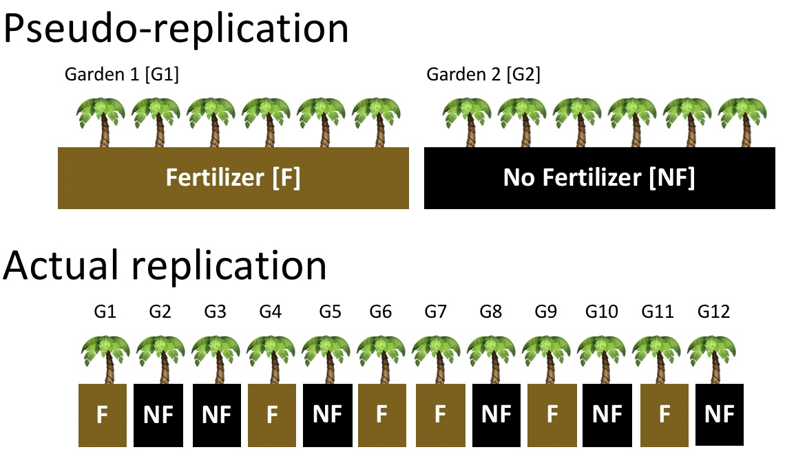

Módulo 6: Principios básicos de Diseño de Experimentos
Mauricio Moreno, PhD
Generalidades
El pionero en introducir la idea del diseño experimental fue Charles S. Peirce al introducir la randomización en experimentos de laboratorio en los años 1800s.
Por otra parte, considerado como uno de los mayores referentes de la estadística moderna, Ronald Fisher publicó en los años 1926 y 1935 los libros The Arrangement of Field Experiments y The Design of Experiments, que nacieron de la necesidad de mejorar la experimentación en la Agricultura.
Hasta el día de hoy, los principios y diseños experimentales propuestos por Fisher son ampliamente usados en todas las ciencias.
No debemos confundir el diseño experimental con el observacional.
Así también, toda la metodología que vimos en el módulo anterior no se aplica exclusivamente a diseños experimentales.
Introducción al diseño experimental
El diseño experimental es el proceso de planear un experimento con el cual se busca probar una hipótesis acerca de una variable dependiente (llamada también de respuesta) en función del cambio de otras variables independientes.
Tiene dos principios generales:
Repetición/replicación: es la aplicación de los tratamientos a un determinado número de unidades experimentales. Mínimo (aunque no recomendable), dos unidades.
Aleatoriedad/randomización: la asignación de unidades experimentales a un tratamiento debe realizarse al azar.
Entre sus objetivos tiene el modelar la variabilidad de los datos y establecer si existen o no diferencias entre las medias aritméticas de los tratamientos que los generaron.
La importancia de modelar adecuadamente la variabilidad radica en que mientras mejor se lo consiga, más confiables serán las inferencias que hagamos a partir nuestro experimento.
Principales fuentes de variación
Variación dentro de los tratamientos: dada por la diferencia entre las repeticiones dentro de un tratamiento con respecto a su media aritmética.
Variación entre los tratamientos: dada por la aplicación del tratamiento.
Error experimental: dada por factores de poco o completamente ajenos al control del investigador.
Cómo veremos más adelante, dependiendo del diseño experimental, otras fuentes de variación serán tomadas en cuenta.
Tipos de diseño experimental
Tradicionales
Se basan fundamentalmente en el principio de la ortogonalidad (las variables independientes que explican a una variable no deben estar correlacionadas)
Para cumplir la ortogonalidad, es común a veces requerir de muchas observaciones.
Por tanto, son fáciles de planear, pero pueden resultar no viables en la práctica
Óptimos
En lugar de la ortogonalidad, utilizan criterios de optimización para reducir el efecto de correlaciones.
Son mucho más difícil de planear, pero generalmente son más fáciles de implementar.
Antes de continuar
Repeticiones técnicas y biológicas

Técnicas: El enfoque es hacer inferencias sobre un inviduo o probando un método, esto por cuanto es natural que las medidas al venir de una misma unidad experimental estén correlacionadas. Se necesitan modelos lineales mixtos y modelos lineales generalizados mixtos para su análisis.
Biológicas: para hacer inferencias acerca de una población en general. El principio de independencia se mantiene y por tanto requieren metodología estándar (modelos lineales y modelos lineales generalizados).
Imagen tomada de aquí
Pseudo repeticiones
Son comunes en agricultura y ecología. Hay que evitarlas en la medida de lo posible por problemas de randomización. Requieren también modelos mixtos para su análisis.
Imagen tomada de aquí
Revisitando el tamaño de muestra (análisis de poder)
La estimación del tamaño de muestra no es siempre una tarea sencilla.
Depende del tipo de variable dependiente y el modelo estadístico a usarse.
Además, requiere de información previa que muchas veces no es fácil de estimar:
Tamaños del efecto (cuya fórmula cambia dependiendo del modelo estadístico)
Y otros dependiendo del modelo estadístico tales como: desviación estándar agrupada, tamaño de efecto de Cohen y correlación.
Para tener una idea de estos parámetros, uno puede valerse de estudios piloto o buscar valores en la literatura.
Para ilustrar solo un caso, vamos a tomar en cuenta el caso del ANOVA (de una vía, balanceado)
Tamaño de muestra para el ANOVA de una vía
En R tenemos dos opciones para calcularlo con los comandos power.anova.test y pwr.anova.test:
Librería base {stats}
Ambas son básicamente lo mismo. En {pwr}, el argumento f se refiere al tamaño de efecto. El tamaño de efecto de un ANOVA de una vía balanceado está dado por la fórmula:
\[ f = \sqrt{\frac{\sigma^2_{\text{entre tratamientos}}}{\sigma^2_{\text{dentro de los tratamientos}}}} \]
Estos valores son las sumas de cuadrados disponibles en la tabla del ANOVA
Tamaño de muestra para el ANOVA de una vía
Recordando el ejemplo de ANOVA del módulo anterior, supongamos que estamos interesados en llevar a cabo un experimento similar, y basándonos en ese estudio, queremos determinar nuestro tamaño de muestra. La tabla del paper se vería más o menos así:
Parameter | Sum_Squares | df | Mean_Square | F | p | Eta2 | Eta2 95% CI |
|---|---|---|---|---|---|---|---|
Treatment | 11939.28 | 4 | 2984.82 | 13.61 | < .001 | 0.31 | [0.19, 1.00] |
Residuals | 26313.52 | 120 | 219.28 |
|
library(pwr)
library(ggplot2)
n <- seq(2, 20, 1)
curva_poder <- pwr.anova.test(k = 5, n = n,
f = sqrt(11939.28/26313.52),
sig.level = 0.05)
curva_poder_df <- data.frame(n,
poder = curva_poder$power)
curva_poder_df |>
ggplot(aes(x = n, y = poder)) +
geom_point() +
geom_line() +
geom_hline(yintercept = 0.8, color = "red", linetype = "dashed") +
theme_bw() +
scale_y_continuous(labels = scales::percent)Inconvenientes con el tamaño de muestra
El ejemplo de tamaño de muestra que vimos corresponde a un caso de “fórmula cerrada”.
Una fórmula cerrada es el nombre que se le da a una solución analítica.
La mayoría de modelos estadísticos clásicos tienen soluciones analíticas.
Con modelos más complejos (mixtos y también óptimos), sus tamaños de muestra pueden ser aproximados con fórmulas cerradas de modelos clásicos.
Sin embargo para estos últimos (sobre todo en el ámbito académico), es preferible utilizar estimación de muestra por medio de simulaciones.
Llevar a cabo simulaciones es complejo e implica un muy buen entendimiento de la matemática detrás de cada modelo.
Entonces, ¿qué podemos hacer?
Cuando el modelo no es tan complejo: {simr}
{simr}es una librería de R que ofrece funciones para el análisis de poder de modelos líneales generalizados mixtos llevando a cabo las simulaciones por nosotros de una manera automatizada.{simr}basa su funcionamiento en la librería{lme4}y por lo tanto padece de las limitaciones de esta última (por ejemplo: datos expresados en forma de proporciones o porcentajes no son posibles de modelar con{lme4}).{simr}en si misma también posee varias limitaciones, entre ellas: sintaxis confusa (sobre todo para usuarios principiantes), tender a ser sumamente lento a medida que la complejidad del modelo aumenta, incapacidad de ser paralelizado fácilmente.
Cuando las fórmulas cerradas y {simr} nos han fallado
Si el objetivo de nuestra investigación no es llegarla a publicar en un journal de altísimo impacto, y nuestro modelo estadístico es complejo, podemos conformarnos con dos “números mágicos” que seguro has escuchado en algún momento:
3 repeticiones por tratamiento: Para todo estadístico se necesitan al menos dos observaciones para poder calcularlo. 3 es una sugerencia ampliamente usada como el número mínimo de repeticiones.
30 como tamaño total de la muestra: Cuando no se tiene manera de estimar los parámetros en un análisis de poder, se suele sugerir empezar la investigación con un número mínimo de 30 observaciones como muestra total.
Introducción al diseño de experimentos en R
Una historia sobre bacterias
Supongamos que tenemos 4 cepas de bacterias que en pruebas de laboratorio han demostrado tener buenas capacidades de degradar nitratos en agua.
Para una posible producción a escala industrial, es necesario el determinar cuál de estas 4 cepas tiene la mejor eficiencia.
Es necesario entonces el diseñar un experimento para responder a esta pregunta, teniendo en cuenta las condiciones que estas cepas, llamémoslas A, B, C y D requieren:
Frascos de un litro de capacidad por cada unidad experimental.
Repeticiones biólogicas (al menos 3)
Librería {FielDHub}
{FielDHub}es una librería de R para que ayuda en la creación de diseños experimentales con enfoque hacia agricultura, reproducción de plantas, silvicultura, ciencias animales y biológicas.Cuenta con capacidad de crear una diversidad de diseños tales como: DCA, DBCA, DFC, DBCA aumentado, diseño de bloques incompletos, diseño cuadrado latino …
Para mayor información, puedes visitar la página oficial de la librería o la página en CRAN

Diseño completamente al azar (DCA)
Es el diseño experimental más simple.
Considera las dos fuentes principales de variación (dentro y entre tratamientos).
Comúnmente usado en estudios de sondeo (screening). En el caso de nuestras bacterias, un screening serviría para determinar parámetros para un análisis de poder, o confirmar las pruebas en laboratorio.
library(FielDHub)
dca.bacterias <- CRD(t = 4, # número de tratamientos
reps = 3, # número de repeticiones por tratamiento
plotNumber = 101, # número que asignamos al primer tratamiento
locationName = "Quito", # nombre del lugar donde se lleva a cabo el experimento
seed = 123) # número que hace reproducible el diseño Diseño completamente al azar (DCA)
Demos un vistazo al objeto dca.bacterias
Completely Randomized Design (CRD)
Information on the design parameters:
List of 5
$ numberofTreatments: num 4
$ treatments : chr [1:4] "T1" "T2" "T3" "T4"
$ Reps : num 3
$ locationName : chr "Quito"
$ seed : num 123
10 First observations of the data frame with the CRD field book:
ID LOCATION PLOT REP TREATMENT
1 1 Quito 101 2 T4
2 2 Quito 102 1 T2
3 3 Quito 103 1 T1
4 4 Quito 104 2 T3
5 5 Quito 105 1 T3
6 6 Quito 106 2 T2
7 7 Quito 107 3 T4
8 8 Quito 108 1 T4
9 9 Quito 109 3 T3
10 10 Quito 110 3 T1Diseño completamente al azar (DCA)
Diseño completamente al azar (DCA)

Diseño completamente al azar (DCA)

La disposición espacial de nuestros tratamientos está dispuesta en formato “serpentín”
Diseño completamente al azar (DCA)
Diseño completamente al azar (DCA)
Unos toques finales
ID LOCATION PLOT REP TREATMENT
1 1 Quito 101 2 Cepa_D
2 2 Quito 102 1 Cepa_B
3 3 Quito 103 1 Cepa_A
4 4 Quito 104 2 Cepa_C
5 5 Quito 105 1 Cepa_C
6 6 Quito 106 2 Cepa_B
7 7 Quito 107 3 Cepa_D
8 8 Quito 108 1 Cepa_D
9 9 Quito 109 3 Cepa_C
10 10 Quito 110 3 Cepa_A
11 11 Quito 111 3 Cepa_B
12 12 Quito 112 2 Cepa_A
Ventajas y desventajas del DCA
Ventajas:
Su implementación y análisis son los más sencillos de todos los diseños experimentales
Es flexible (permite cualquier número de tratamientos, repeticiones)
Desventajas:
Su implementación está limitada a ambientes muy bien controlados y unidades experimentales dentro de cada tratamiento bastante homogéneas. Por ello, es muy dificil su implementación en ambientes abiertos (por ejemplo, experimentos al aire libre).
Al no controlar otras fuentes de variación, es menos preciso que otros diseños.
Ecuación del DCA
- Matemáticamente un DCA se puede representar con la siguiente fórmula:
\[ Y_{i,j} = \beta_0 + \beta_i\,\text{Factor}_i + \epsilon \]
Donde:
\(Y_{i,j}\): es la observación del factor \(i\) de la repetición \(j\)
\(\beta_0\): es el parámetro de locación del modelo
\(\beta_i\): es el coeficiente del factor \(i\)
\(\epsilon\): es el error aleatorio del modelo
Diseño en bloques completamente al azar (DBCA)
Un DBCA introduce el modelado de una tercera fuente de variación: el bloque
El bloque es una adición que ayuda a controlar mejor los errores aleatorios al disponer los tratamientos randomizados en tantas unidades físicas como repeticiones se desee.
El bloque en el contexto del experimentador, podría referirse en nuestro ejemplo, a las estanterías que utilizaríamos para colocar nuestras botellas con medio de cultivo. Es de esperarse que al encontrarse las estanterías expuestas a pequeñas diferencias (luz, humedad, temperatura) entre una y otra, sus errores aleatorios sean distintos.
El efecto del bloque busca regularizar dichas diferencias.
Diseño en bloques completamente al azar (DBCA)
ID LOCATION PLOT REP TREATMENT
1 1 QUITO 101 1 Cepa_C
2 2 QUITO 102 1 Cepa_D
3 3 QUITO 103 1 Cepa_A
4 4 QUITO 104 1 Cepa_B
8 5 QUITO 201 2 Cepa_A
7 6 QUITO 202 2 Cepa_D
6 7 QUITO 203 2 Cepa_B
5 8 QUITO 204 2 Cepa_C
9 9 QUITO 301 3 Cepa_C
10 10 QUITO 302 3 Cepa_A
11 11 QUITO 303 3 Cepa_B
12 12 QUITO 304 3 Cepa_DVentajas y desventajas del DBCA
Ventajas:
Tiene mayor precisión que el DCA al controlar una fuente extra de variación.
Es mejor que el DCA en experimentos al aire libre.
Desventajas:
- Cuando el número de tratamientos se incrementa, el número de bloques también. Esto hace que mantener la homogeneidad de los bloques resulte más difícil de controlar.
Ecuación del DBCA
\[ Y_{i,j,k} = \beta_0 + \beta_i\,\text{Factor}_i + \beta_j\,\text{Bloque}_j+ \epsilon \]
Donde:
\(Y_{i,j,k}\): es la observación del factor \(i\) del bloque \(j\) de la repetición \(k\)
\(\beta_i\): es el coeficiente del factor \(i\)
\(\beta_j\): es el coeficiente del bloque \(j\)
Diseño factorial completo (DFC)
Antes de continuar, no hemos definido exactamente qué entendemos por tratamiento.
En nuestro ejemplo, el tratamiento ha sido determinado por las distintas cepas a evaluar.
Sin embargo, es más común encontrarnos con preguntas de investigación que tienen mayor nivel de complejidad:
- Desde el punto de vista biológico, el saber si una determinada cepa puede degradar N a una única concentración no parece tan crucial. De manera lógica, sería de mayor interés el evaluar las cepas a distintas concentraciones de N.
Diseño factorial completo (DFC)
Es decir, hasta el momento, nuestros tratamientos están definidos por dos factores:
Las 4 cepas bacterianas
Una única concentración de N
¿Qué tienen en común estos dos factores? ¡ambos son controlados por el investigador!
En resumen, un tratamiento se define cómo el uso de un solo factor o la combinación de dos o más factores a evaluar en un conjunto (muestra) de unidades experimentales y sobre los cuales el investigador tiene control.
Un factor está conformado por \(n\) niveles, en nuestro ejemplo hasta el momento tenemos lo siguiente:
- Factor 1: Cepa
- Niveles: 4 (“A”, “B”, “C” y “D”)
- Factor 2: Concentración de N
- Niveles: 1 (una misma concentración de N para todos los niveles del factor 1)
- Factor 1: Cepa
Diseño factorial completo (DFC)
Regresando al hecho de que evaluar las cepas a distintas concentraciones de N sería mas interesante, el DFC nos ofrece precisamente esa posibilidad.
El DFC es una extensión del DCA y el DBCA que nos permite evaluar tratamientos donde los factores que los conforman tienen 2 o más niveles cada uno.
Así, digamos que queremos evaluar 3 distintas concentraciones de N. Entonces, nuestros tratamientos estarán determinados por los factores cepa y N de la siguiente manera:
- Factor 1: Cepa
- Niveles: 4 (“A”, “B”, “C”, “D”)
- Factor 2: Concentración de N
- Niveles: 3 (“N1”, “N2”, “N3”)
- Factor 1: Cepa
Diseño factorial completo (DFC)
DCA factorial completo
FACTORS <- rep(c("CEPA", "N"), c(4,3))
LEVELS <- c("A", "B", "C", "D", "N1", "N2", "N3")
data_factorial <- data.frame(FACTOR = FACTORS, LEVEL = LEVELS)
dfc.dca.bacterias <- full_factorial(setfactors = NULL,
reps = 3,
l = 1,
type = 1,
plotNumber = 101,
seed = 123,
locationNames = "Quito",
data = data_factorial) ID LOCATION PLOT REP FACTOR_CEPA FACTOR_N TRT_COMB
1 1 Quito 101 3 A N3 A*N3
2 2 Quito 102 2 B N1 B*N1
3 3 Quito 103 3 D N3 D*N3
4 4 Quito 104 1 B N3 B*N3
5 5 Quito 105 1 B N3 B*N3
6 6 Quito 106 1 A N1 A*N1
7 7 Quito 107 2 C N3 C*N3
8 8 Quito 108 1 A N1 A*N1
9 9 Quito 109 2 D N2 D*N2
10 10 Quito 110 3 B N2 B*N2
11 11 Quito 111 3 B N2 B*N2
12 12 Quito 112 1 A N1 A*N1
13 13 Quito 113 2 D N2 D*N2
14 14 Quito 114 1 D N1 D*N1Diseño factorial completo (DFC)
DBCA factorial completo
ID LOCATION PLOT REP FACTOR_CEPA FACTOR_N TRT_COMB
1 1 Quito 101 1 D N2 D*N2
2 2 Quito 102 1 B N1 B*N1
3 3 Quito 103 1 A N2 A*N2
4 4 Quito 104 1 B N3 B*N3
5 5 Quito 105 1 A N3 A*N3
6 6 Quito 106 1 C N3 C*N3
7 7 Quito 107 1 D N3 D*N3
8 8 Quito 108 1 A N1 A*N1
9 9 Quito 109 1 B N2 B*N2
10 10 Quito 110 1 C N1 C*N1
11 11 Quito 111 1 D N1 D*N1
12 12 Quito 112 1 C N2 C*N2
24 13 Quito 201 2 A N3 A*N3
23 14 Quito 202 2 B N2 B*N2Ventajas y desventajas del DCF
Ventajas:
En este tipo de diseños podemos introducir interacciones entre factores.
Puede ayudar a responder varias preguntas a la vez gracias a las múltiples combinaciones entre sus factores.
Desventajas:
Puede resultar en enormes números de unidades experimentales a medida que los niveles de los factores incrementan.
La complejidad de la interpretación de sus resultados aumenta también al introducir más factores, sobre todo de las interacciones entre estos, que muchas veces resultan en conclusiones carentes de sentido.
Ecuación del DCF (de dos factores)
\[ Y_{i,j,k} = \beta_0 + \beta_i\text{Factor}_i + \beta_j\,\text{Factor}_j + \beta_{ij}\,\text{Factor}_i\times\text{Factor}_j+\epsilon \] Donde:
\(Y_{i,j,k}\): es la observación del factor \(i\) del bloque \(j\) de la repetición \(k\)
\(\beta_i\): es el coeficiente del factor \(i\)
\(\beta_j\): es el coeficiente del factor \(j\)
\(\beta_ij\): es el coefficiente de la interacción de los factores \(i\) y \(j\)
Diseño Cuadrado Latino (DCL)
A diferencia del DBCA, el DCL incluye dos factores de bloque en lugar de uno. Además, estos factores de bloque corresponden a variables de interés del investigador (ya no, como en el ejemplo anterior, que los bloques podían corresponder a locaciones físicas por ejemplo)
La ventaja de este tipo de diseños es que fraccionan (reducen) el número de unidades experimentales que serían necesarias con otros diseños.
Como condición presenta que los factores tienen que tener igual número de níveles.
En el ejemplo de las bacterias, supongamos que retiramos una cepa y agregamos el fósforo como factor de interés:
- Factor 1: Cepa (tratamiento principal)
- Niveles: 3 (“A”, “B”, “C”)
- Factor 2: Concentración de N (factor de bloque)
- Niveles: 3 (“N1”, “N2”, “N3”)
- Factor 3: Concentración de P (factor de bloque)
- Niveles: 3 (“P1”, “P2”, “P3”)
- Factor 1: Cepa (tratamiento principal)
Diseño Cuadrado Latino (DCL)
Bajo un DBCA factorial con 3 repeticiones, necesitaríamos 81 unidades experimentales, mientras que bajo un DCL, necesitaríamos 27.
Podemos generalizar el número total de observaciones para un DCL si aplicamos la siguiente fórmula: siendo \(K\) el número de niveles todos los factores, el número total de unidades experimentales que necesitamos es igual a:
Esta reducción en el número de unidades experimentales es conseguido gracias a ordenar al azar las unidades experimentales en un cuadrado (de ahí su nombre) donde el número de filas y columnas es igual a \(K\) niveles se consideren.
Esta optimización de recursos tienen un costo, en un DCL no es posible estimar coeficientes para interacciones.
Diseño Cuadrado Latino (DCL)
ID LOCATION PLOT SQUARE ROW COLUMN TREATMENT
1 1 Quito 101 1 P1 N1 Cepa3
2 2 Quito 102 1 P1 N2 Cepa1
3 3 Quito 103 1 P1 N3 Cepa2
4 4 Quito 106 1 P2 N1 Cepa2
5 5 Quito 105 1 P2 N2 Cepa3
6 6 Quito 104 1 P2 N3 Cepa1
7 7 Quito 107 1 P3 N1 Cepa1
8 8 Quito 108 1 P3 N2 Cepa2
9 9 Quito 109 1 P3 N3 Cepa3
10 10 Quito 201 2 P1 N1 Cepa2
11 11 Quito 202 2 P1 N2 Cepa1
12 12 Quito 203 2 P1 N3 Cepa3
13 13 Quito 206 2 P2 N1 Cepa3
14 14 Quito 205 2 P2 N2 Cepa2Ventajas y desventajas del DCL
Ventajas:
- DCL es más eficiente que DBCA y DCA gracias al introducir un “bloque” extra. Esto implica el uso de un reducido número de unidades experimentales
Desventajas:
La necesidad de contar con el mismo número de niveles en ambos factores puede ser considerada como una desventaja.
Bajo un DCL NO se pueden estudiar interacciones entre los factores. Esto debido a que la matriz del modelo no es ortogonal para poder estimar dichos efectos.
Ecuación del DCL
\[ Y_{i,j,k,l} = \beta_0 + \beta_i\text{Factor}_i + \beta_j\,\text{Fila}_j + \beta_{k}\,\text{Columna}_k+\epsilon \]
\(Y_{i,j,k,l}\): es la observación del factor \(i\) de la fila \(j\) de la columna \(k\) de la repetición \(l\)
\(\beta_i\): es el coeficiente del factor \(i\)
\(\beta_j\): es el coeficiente de la fila \(j\)
\(\beta_k\): es el coeficiente de la columna \(k\)
Usando el fieldBook
- La tabla de datos
fieldBookpodemos exportarla a un archivo Excel con ayuda de la libreríaopenxlsx

Otros diseños experimentales
{FielDHub} nos ofrece las funciones de planificar otros diseños tales como:
Diseño split-plot: muy popular en agricultura. Se basa en modelar dos factores.
Parcela total: un factor difícil de aplicar (tipo de arado por ejemplo).
Sub parcela: factores fáciles de cambiar (tipo de fertilizante, semilla plantada).
DBCA aumentado: es una variación del DBCA donde se reducen el número de repeticiones de ciertos tratamientos (el control por lo general). En un DBCA clásico, se aplicaría el control con tantas repeticiones tenga el resto de tratamientos por cada bloque. En el DBCA aumentado, el control se aplicaría una sola vez por bloque.
Alfa lattice: otra variación del DBCA donde cada bloque es reorganizado en sub-bloques. Cada sub-bloque contiene un subset del total de los tratamientos (incompleto). Esto ayuda a reducir la variabilidad y aumentar la precisión sin tener todos los tratamientos en el mismo bloque.
Implementación en R
Todos los diseños experimentales son posibles de analizar mediante ANOVA
Solo basta saber estructurar su fórmula
Un DCA es equivalente al ANOVA de una vía
Un DBCA de un solo factor es equivalente a un ANOVA aditivo de dos vías
Un DFC es equivalente a un ANOVA no aditivo de 2 vías (más un efecto de bloque en caso de ser un DFC por bloques).
Terminaremos por tanto con tan solo un ejemplo del diseño cuadrado latino
Diseño cuadrado latino en R
En un estudio agronómico se desea conocer el efecto sobre la productividad en quintales de maíz al usar tres factores: fertilizante, estilo de labrado, y semilla.
Tenemos 3 factores:
Fertilizante (F1, F2, F3, F4, F5),
Labrado (labA, labB, labC, labD, labE) y
Semilla (A, B, C, D, E)
fertil <- c(rep("F1",1), rep("F2",1), rep("F3",1), rep("F4",1), rep("F5",1))
labra <- c(rep("labA",5), rep("labB",5), rep("labC",5), rep("labD",5), rep("labE",5))
seed <- c("A","E","C","B","D", "C","B","A","D","E", "B","C","D","E","A", "D","A","E","C","B", "E","D","B","A","C")
quintales <- c(42,45,41,56,47,
47,54,46,52,49,
55,52,57,49,45,
51,44,47,50,54,
44,50,48,43,46)
misdatos <- data.frame(labra, fertil, seed, quintales)Diseño cuadrado latino en R
Diseño cuadrado latino en R
Anova Table (Type II tests)
Response: quintales
Sum Sq Df F value Pr(>F)
fertil 17.76 4 0.7967 0.549839
labra 109.36 4 4.9055 0.014105 *
seed 286.16 4 12.8361 0.000271 ***
Residuals 66.88 12
---
Signif. codes: 0 '***' 0.001 '**' 0.01 '*' 0.05 '.' 0.1 ' ' 1- Homogeneidad de las varianzas
Levene's Test for Homogeneity of Variance (center = median)
Df F value Pr(>F)
group 4 0.1774 0.9474
20 - Normalidad de los residuos
Fin del módulo 6
Créditos de fotos
Foto portada por Adele Payman en Unsplash
Foto final por Will Walker en Unsplash
Resto de fotos: Varias fuentes